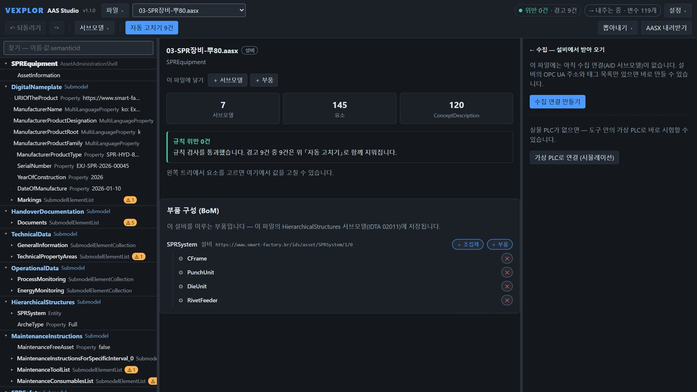
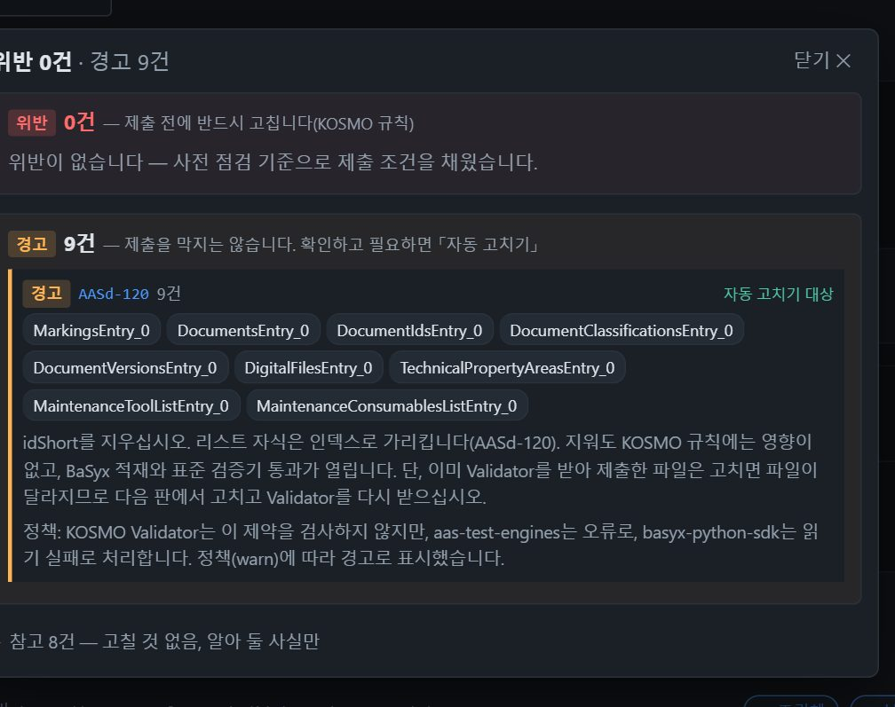
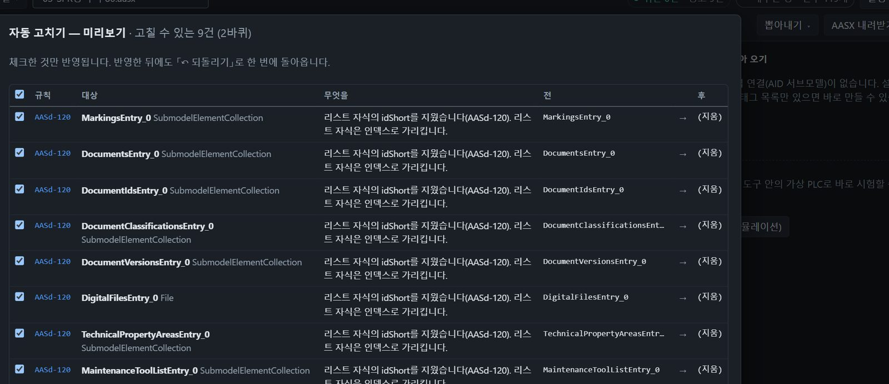
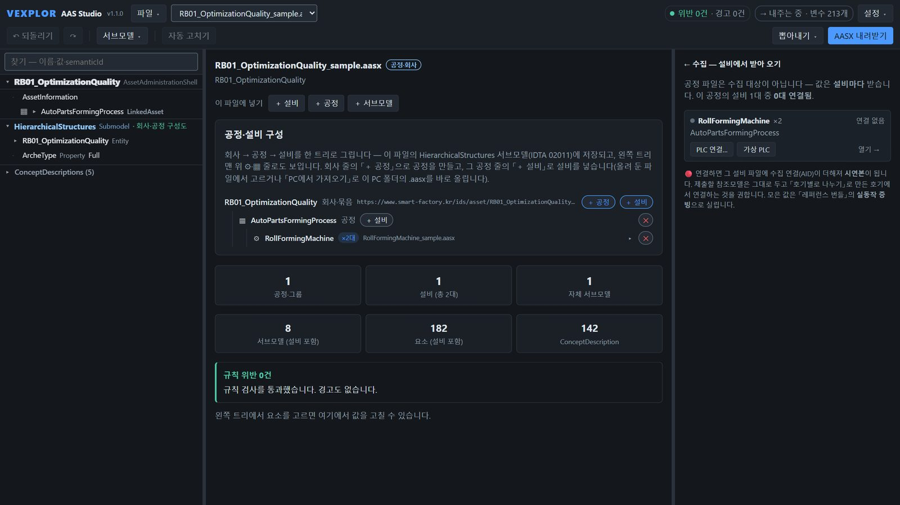
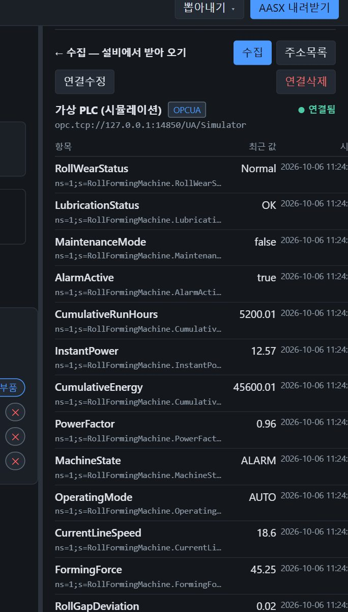
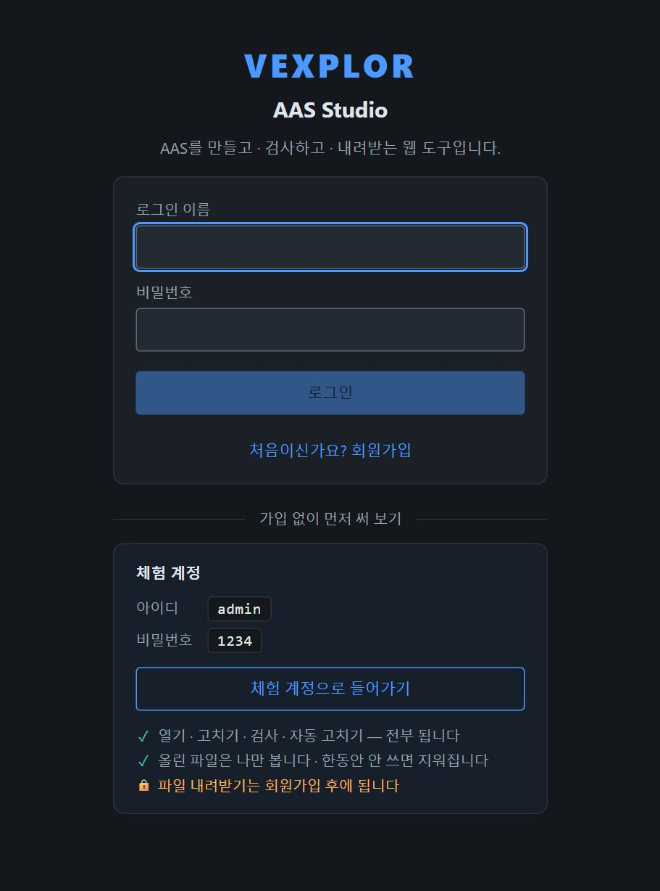

검사 — 무엇이 어긋났는지
- 규칙 43종 — 패키지 구조 · 메타모델 제약 · 제출처(KOSMO) 사업 규칙
- 위반 · 경고 · 참고로 나눠 어디가 왜 틀렸는지, 어떻게 고치는지까지
- 표준 검증을 다 통과해도 제출처에서 떨어지는 자리를 미리 걸러 줍니다
설비 한 대의 AASX를 올리면 무엇이 규칙에 어긋나는지 짚어 주고, 고칠 수 있는 것은 한 번에 고칩니다. AAS를 처음 다루는 사람도 따라올 수 있게 만들었습니다.
체험 서버 주소를 확인하는 중…

지금까지는 편집기 · AAS 서버 · OPC UA 도구를 오가야 했습니다. 브라우저 하나로 모았습니다.
예전: AASX Package Explorer(설치형)
브라우저에서 열고 고치고 내려받습니다. 고칠 자리를 짚어 주고 자동으로 고칩니다.
예전: Eclipse BaSyx 서버
같은 서버가 IDTA Part 2 REST API · 레지스트리로 다른 시스템에 AAS를 내줍니다.
예전: 별도 클라이언트 · 서버
AAS 안의 AID대로 설비 값을 모으고, OPC UA 서버로 상위 앱에 구독으로 내줍니다.
위 도구들과 제휴하거나 그 소스를 쓴 것이 아닙니다 — 같은 일을 하나로 묶었다는 뜻입니다.
모든 그림은 실제 화면입니다.




가입 없이 체험 계정으로 바로 써 볼 수 있습니다. 작업한 파일을 내려받으려면 회원가입을 해 주십시오.
체험 계정 admin / 1234 | 가입한 회원 | |
|---|---|---|
| 열기 · 고치기 · 검사 · 자동 고치기 | ✅ | ✅ |
| 검증 결과서 보기 | ✅ | ✅ |
| AASX · 번들 내려받기 | 🔒 | ✅ |
| 올린 파일 보관 | 로그인마다 새 칸 | 탈퇴할 때까지 |
